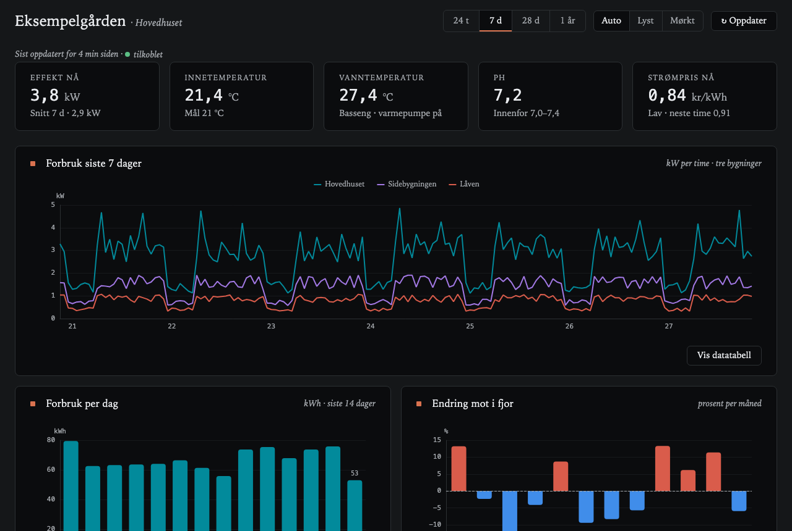
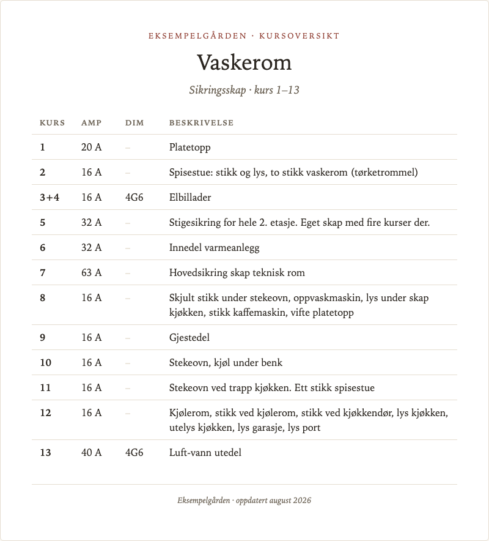
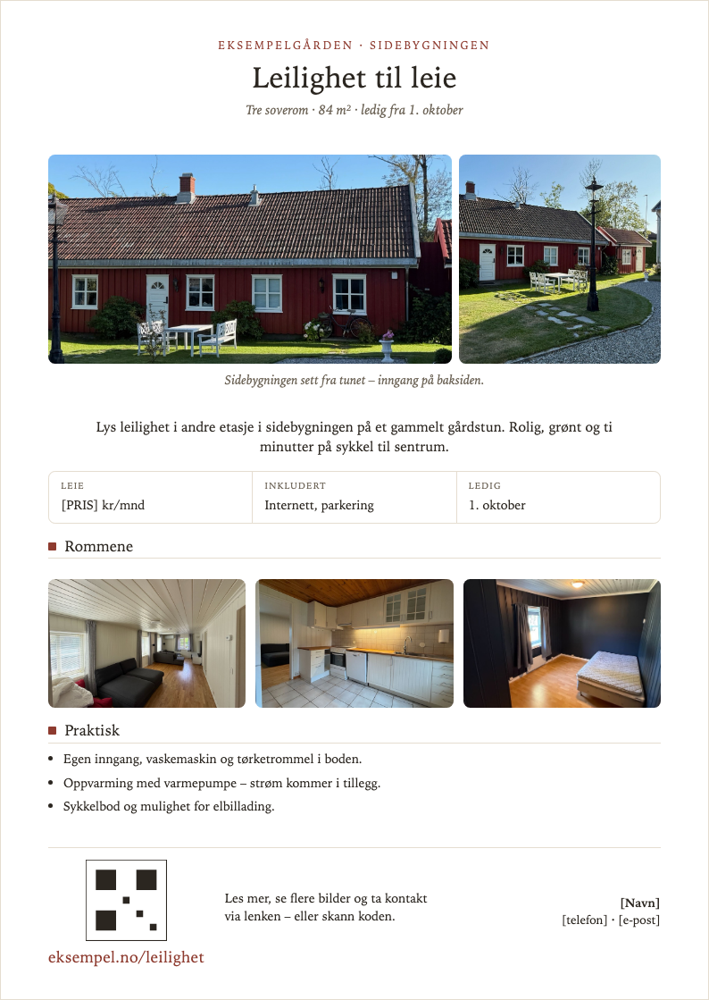
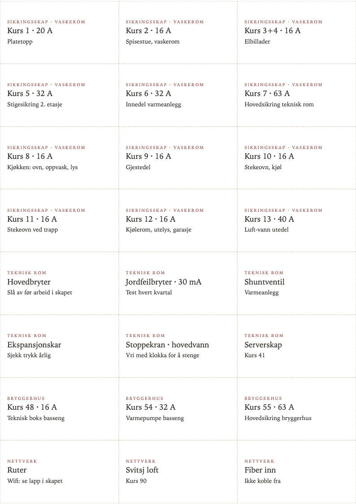

Nerdesign · eksempler
Eksempler
Hele dokumenter bygget med systemet, med fiktivt innhold
Hvert eksempel er én HTML-fil som lenker til nd.css. Åpne dem, bytt tema, og skriv dem ut – utskriften er alltid lys på hvitt, og sideskiftene er der arkene slutter.

Åpne

.nd-sheet, .nd-table--compact, .nd-footnote.Åpne · PDF

.nd-sheet--fixed, .nd-keyfacts, .nd-qr.Åpne · PDF

.nd-label-sheet, .nd-label.Åpne · PDF
Slik lages PDF-ene
PDF-ene er skrevet ut med headless Chrome fra HTML-en, uten annen behandling. Kommandoen i repoet (npm run test:print) gjør det samme og feiler hvis sideantallet endrer seg .
"/Applications/Google Chrome.app/Contents/MacOS/Google Chrome" \ --headless --print-to-pdf=kursoversikt.pdf --no-pdf-header-footer \ examples/circuit-overview.html